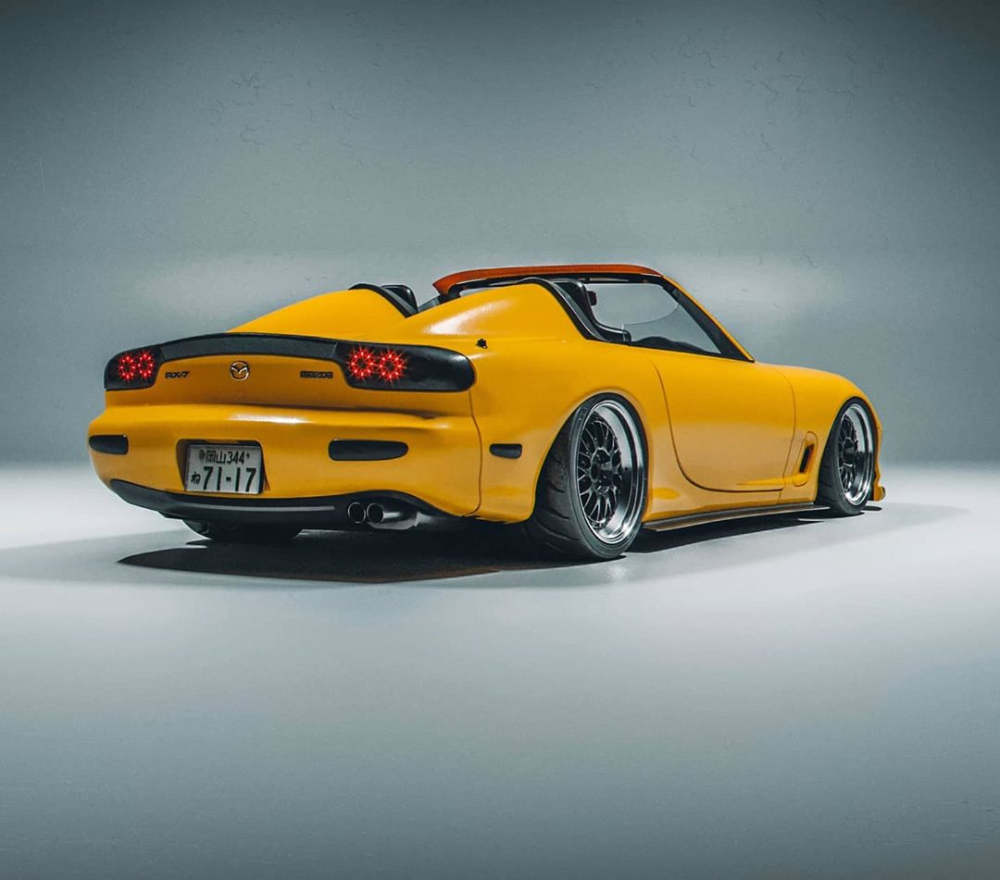
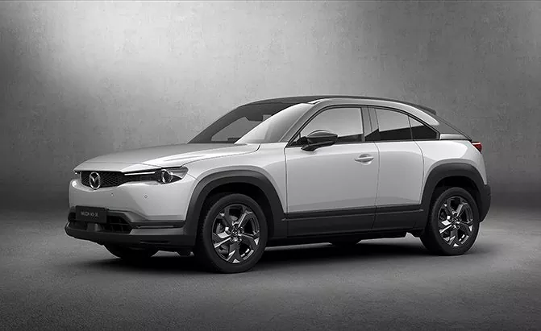

Automóveis
Carros que Utilizaram
Os modelos mais icônicos equipados com o motor Wankel ao longo da história

NSU
Ro 80
1967 — 1977
Motor
KKM 612
Rotores
2×
Cilindrada
1.0 L
Potência
115 cv

Mazda
Cosmo Sport L10B
1967 — 1972
Motor
10A
Rotores
2×
Cilindrada
0.98 L
Potência
110 cv

Mazda
RX-7 FD
1992 — 2002
Motor
13B-REW
Rotores
2× Twin Turbo
Cilindrada
1.3 L
Potência
255–280 cv

Mazda
RX-8
2002 — 2012
Motor
13B-MSP RENESIS
Rotores
2×
Cilindrada
1.3 L
Potência
232–238 cv

Mazda
787B (Le Mans)
1991
Motor
R26B
Rotores
4×
Cilindrada
2.6 L
Potência
700+ cv

Mazda
MX-30 R-EV
2023 — Atual
Motor
8C (Gerador)
Tipo
Plug-in Híbrido
Cilindrada
0.83 L
Autonomia
+680 km